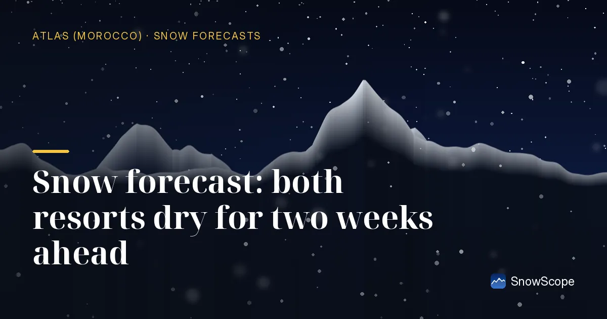

Snow forecast: both resorts dry for two weeks ahead
Snow forecast – Our snow model shows no meaningful snowfall coming to either Jbel Hebri or Oukaïmeden over the next two weeks. Both resorts will stay dry through early December, with less than 1 cm expected across the entire Atlas region.
See the live snow forecast for Jbel Hebri in the SnowScope appSnow depth, powder alerts and the 3D map, free.
No snow in the forecast
I have watched the Atlas mountains through many dry autumns, and this period looks like one of them. The two leading weather models, run today, agree on a bleak picture: zero new snow at Jbel Hebri and zero at Oukaïmeden from now until 2 December. The whole region will see at most 1 cm of new snow in the next 14 days, with no areas reaching even 20 cm.
The models split their view between early week (45 percent of any snow would fall in days 1 to 7) and late week (days 8 to 14), but the difference matters little when both windows bring nothing. Snow covered area across the Atlas has shrunk from 20 km² on 16 November to just 10 km² today, and our forecast shows it staying at that low level by 21 November.
| Resort | Snow depth | New snow, 72 h | Coming, next days | Top |
|---|---|---|---|---|
| Jbel Hebri | 0 cm | 0 cm | 0 cm | 2,108 m |
| Oukaïmeden | 0 cm | 0 cm | 0 cm | 3,258 m |

No height will help
I often find that the highest slopes hold snow when lower ground has none, but not this time. At Oukaïmeden's upper terrain above 3000 m, the model gives zero new snow. The same is true from 2500 m upwards across all the mountains we track. Even the peak of Oukaïmeden at 3258 m will see nothing fall over the next 14 days.
This is the story of a high-pressure system that is keeping Atlantic storms away from North Africa. Without a storm to push moisture inland and force it up the slopes, the mountains stay clear.

What we see on the ground today
Right now, neither resort has measurable snow on the upper slopes. Both sit at zero depth, which is normal for mid-November in this part of the world, but it means skiers have no base to work with. The thin patches that may have lingered from earlier autumn are gone.

Looking further ahead
Past winters in the Atlas show that snow often arrives in December, with the heaviest falls in January and February. This forecast is for two weeks only, so patience is needed. The dry spell we see now does not mean the season is lost; it means waiting for the weather pattern to shift. When it does, the high peaks will respond quickly.
What to do now
If you are planning a trip to the Atlas, do not expect skiing for at least two weeks. Use this time to explore the trails on foot, scout the terrain, and prepare your base camp. Check back in early December when we can see further into winter. The mountains are not done yet; they are just resting.
Tips for skiers
- Skip the resorts for now. No snow will fall in the next two weeks at any height above 1000 m across the Atlas.
- Return to check the forecast in late November, when the picture for early December will be clearer and the weather patterns may have shifted.
- If you are on the mountains for other reasons, stay off high altitude terrain until snow returns; rocks are close to the surface under thin cover, where it exists at all.
- Past winters show strong December and January snow is likely, so do not write off the season based on this two-week dry spell.
About these numbers
Resort snow depths are the deepest snow on the resort's upper slopes from the SnowScope snow model (about 1 km, run of 18 November); they are estimates for an area, not a measurement at one point. Station values are measurements on the date shown. Forecasts can change. Always read the official avalanche bulletin before going off-piste.
Cite this report
For research, teaching or the press: the numbers and charts are free to reuse under CC BY 4.0 with this citation.
SnowScope (2026), Snow forecast: both resorts dry for two weeks ahead, https://snowscope.app/blog/en/2026/11/atlas-morocco-2-week-snow-forecast-maps-18-november-2026.html, accessed 2026-11-18
SnowScope (Atlas Labs). (2026, November 18). Snow forecast: both resorts dry for two weeks ahead. SnowScope snow reports. https://snowscope.app/blog/en/2026/11/atlas-morocco-2-week-snow-forecast-maps-18-november-2026.html
BibTeX
@misc{snowscope2026atlasmorocco2weeksnowfor,
author = {{SnowScope (Atlas Labs)}},
title = {Snow forecast: both resorts dry for two weeks ahead},
year = {2026},
month = nov,
howpublished = {\url{https://snowscope.app/blog/en/2026/11/atlas-morocco-2-week-snow-forecast-maps-18-november-2026.html}},
note = {Published 2026-11-18 10:56 UTC; accessed 2026-11-18}
}· CC BY 4.0 · Methods, data and tools →
Jbel Hebri: snow and temperature by height, this winter vs last (tools) →
Follow Jbel Hebri
Free: a message when fresh snow is coming, and the forecast every morning.
More snow reports

About 65 mm on Toubkal by 12 November, but the 0 °C level stays near 4,000 m: rain at Oukaïmeden and in the valleys, snow only on the top.

December snow odds from 46 winters and checked day prices: Ski Cooper $49, Les 3 Vallées €75.70, Oukaïmeden no official tariff. Where a cheap December ski day works.

We compared the snow on 10 November with each winter's deepest snow at 46 ski resorts over 46 winters. A snowy start helps, but less than many skiers think.